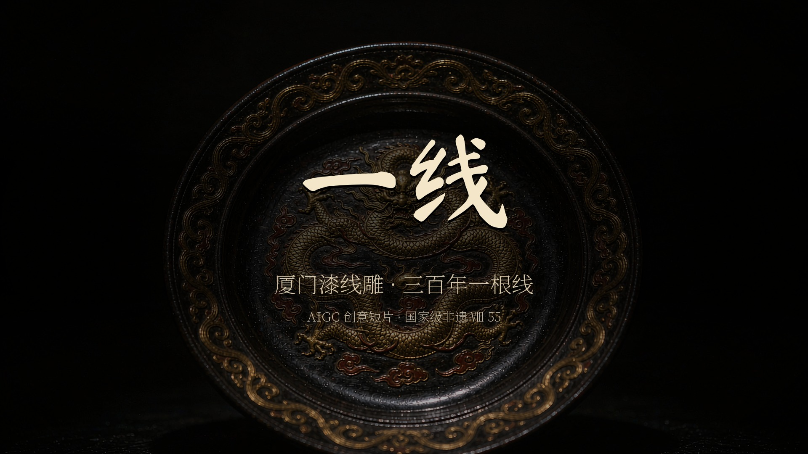
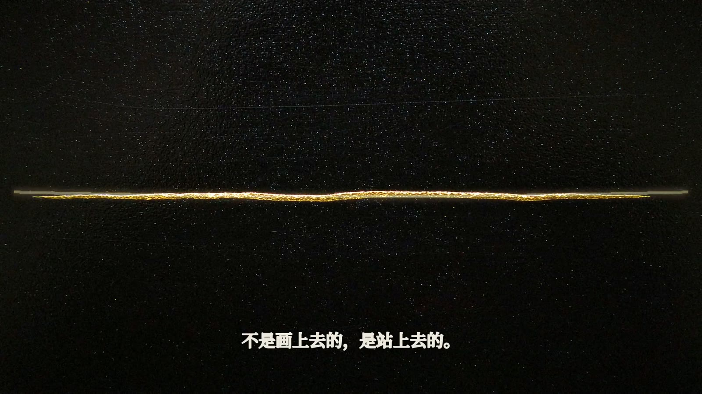
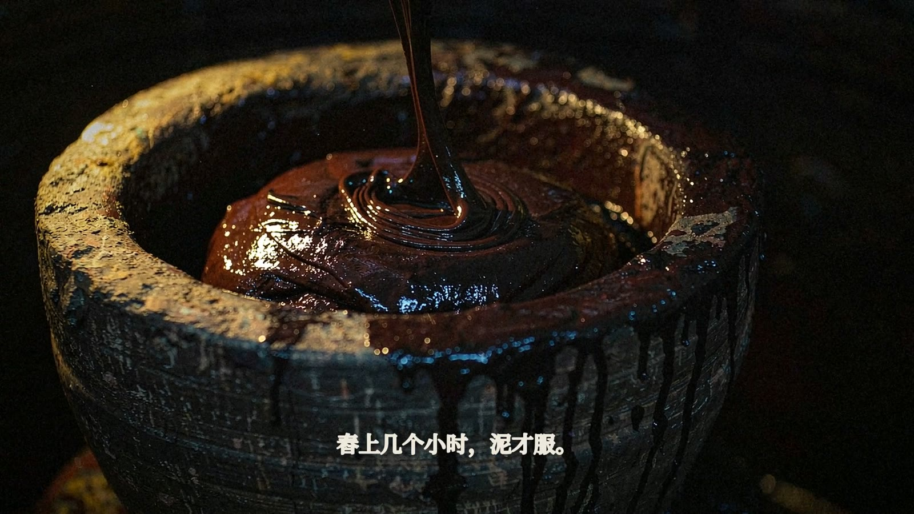
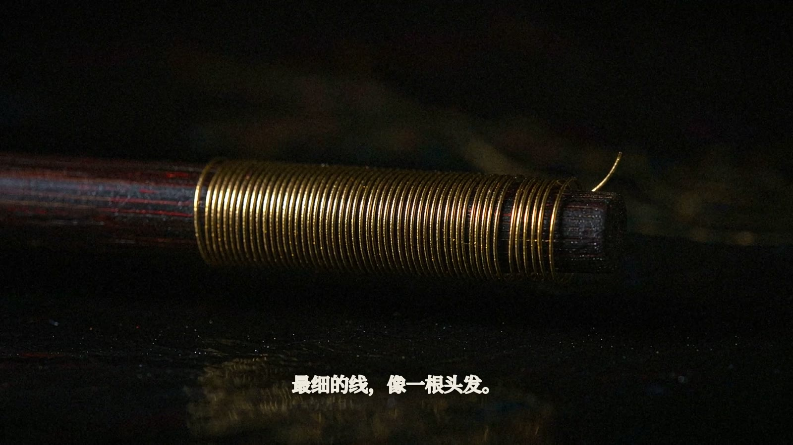
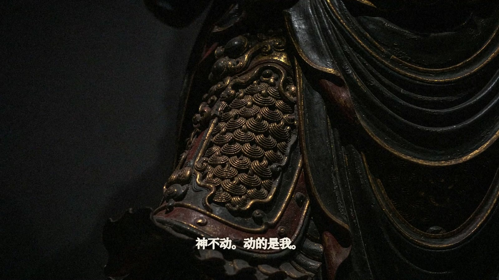
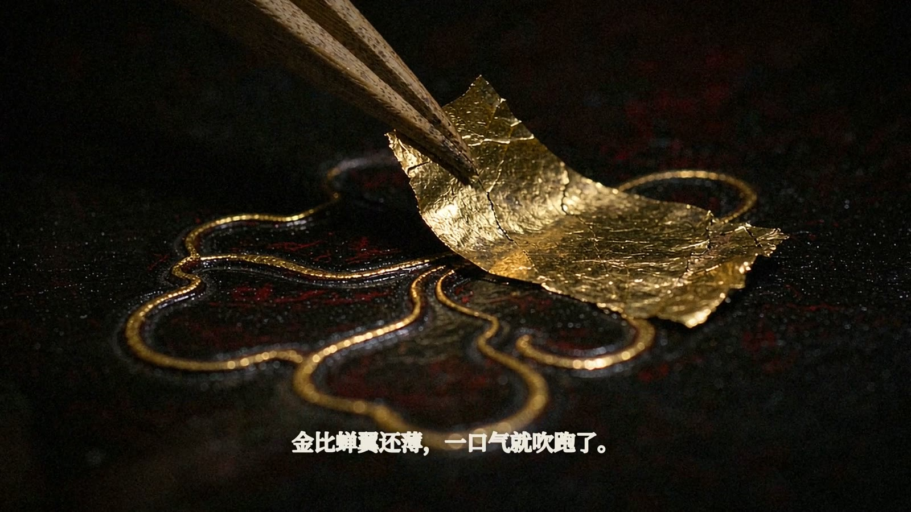
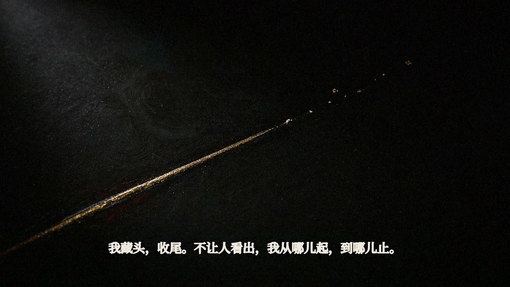

漆线雕是把漆泥搓成线、再把线盘成浮雕的手艺。这片子不讲大师生平，也不做工艺全景， 只让这根线自己开口：「我叫线。不是画上去的，是站上去的。」 它记得自己是被舂出来的、被搓出来的，记得一九七二年被从神像上剥离， 也记得一九七三年在广交会上，有人问它叫什么。






| 画面 | 十八张图版由文生图模型生成（大漆微距、深黑漆底、24K 金线浮雕）； 每镜是一个取样窗在图版上做缓动裁切，最大放大率 1.46。 |
|---|---|
| 转场 | 十六处转场全部由同一条金线完成：曲线预计算成弧长图与距离图， 线先落进画面，图形再沿「到线的距离」从线向两边绽开。 |
| 声音 | 旁白 edge-tts（云希，−12% 语速）；箫、低音垫、舂泥、搓线、贴金、磬 全部用 numpy 合成，无版权音乐；ffmpeg ebur128 对齐响度。 |
| 判据 | 四十七条断言：时长/画幅/字幕上屏/单行不折行/配音不超槽/每镜非废帧/ 转场里金线在场/取样窗不进工具水印/真峰 ≤ −1 dBFS/无三秒以上静音/字体缺字为零。 |
| 史实 | 项目编号、蔡氏代数、1972 剥离、1973 命名、《高古游丝》引文， 逐条核到可打开的来源（中国非物质文化遗产网、 央视新闻、 中国新闻网、 厦门市文化馆）。 |
AI 只用在一处：把十八张图版画出来。片中所有运动、转场、颗粒、字幕、配乐与音效
都是代码逐帧算出来的——没有视频生成模型，没有真人素材，没有换脸与声音克隆。
同一份 story.py 跑出来的每一帧都可复现。